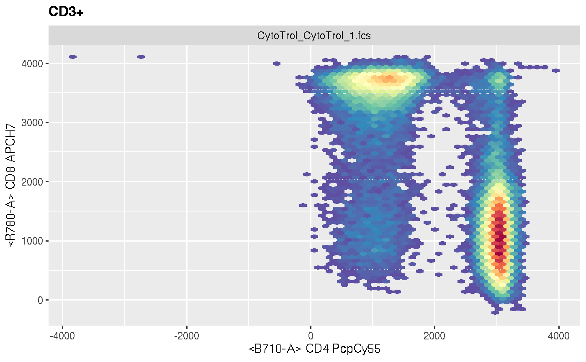
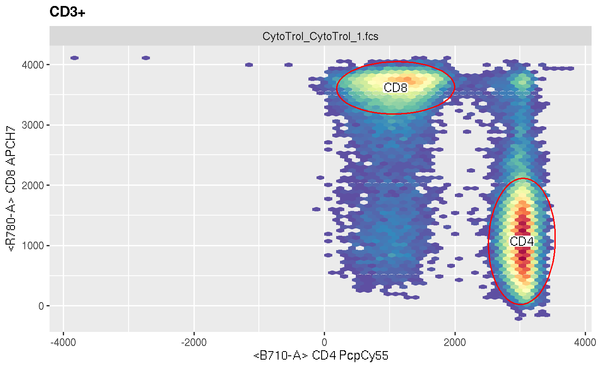
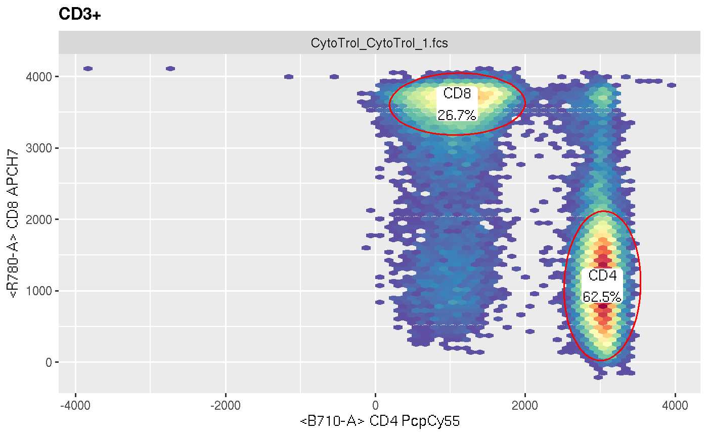

This is a virtual layer and will be instanatiated as geom_label layer within ggycto.+ operator.
geom_stats(gate = NULL, ..., value = NULL, type = "percent", negated = FALSE, adjust = 0.5, label.padding = unit(0.05, "lines"), label.size = 0, digits = 3)
| gate | a 'filterList` or character (represent as a population node in GatingSet) if not supplied, ggcyto then tries to parse the gate from the first geom_gate layer. |
|---|---|
| ... | other arguments passed to geom_label layer |
| value | the pre-calculated stats value. when supplied, the stats computing is skipped. |
| type | a vector of strings to specify the stats types. can be any or multiple values of "percent", "count", "gate_name", or "MFI" (MFI is currently not supported yet). |
| negated | whether the gate needs to be negated |
| adjust | adjust the position of the centroid. from 0 to 1. |
| label.padding, label.size | arguments passed to geom_label layer |
| digits | control the stats format |
a geom_popStats layer
So it is dedicated for ggcyto context and thus cannot be added to ggplot object directly.
dataDir <- system.file("extdata",package="flowWorkspaceData") gs <- load_gs(list.files(dataDir, pattern = "gs_manual",full = TRUE)) p <- ggcyto(gs, aes(x = CD4, y = CD8), subset = "CD3+") + geom_hex(bins = 64) p# display gate name and percent p + geom_gate(c("CD4", "CD8")) + geom_stats(type = c("gate_name", "percent"))